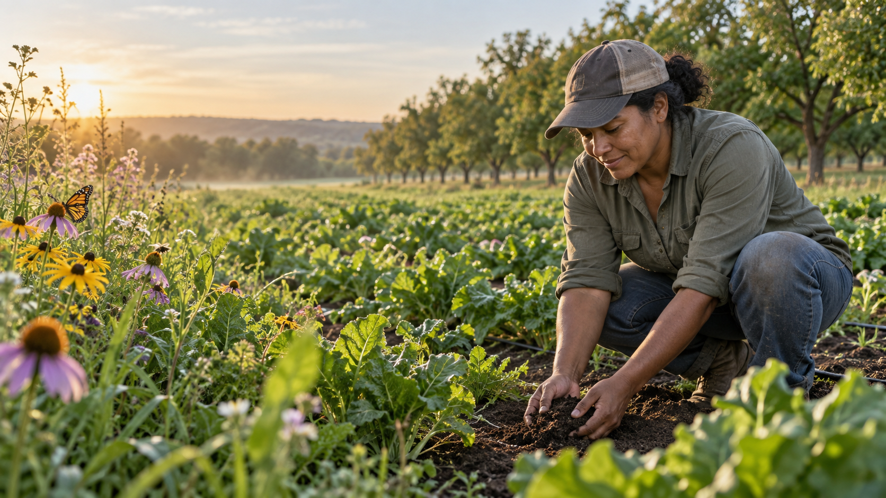

Red Ridge Orchard
Pontotoc County · Native pecans & pollinator habitat

A sample producer story
Growing food with a longer view.
This fictional profile demonstrates a simple narrative format: who grows here, what they offer, and the practices visitors can learn about. In the production site, each producer can edit their profile through the Wix CMS.
- HarvestNative pecans
- PracticesHabitat, mulch, orchard care
- Contact routeProducer-managed link